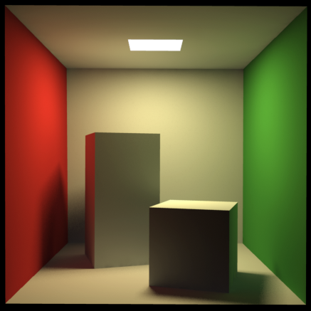

Attendence List
Attendence:
- Zijian Zhang
- George
- Michael
- Jane
Absence:
- Andy
- Mike
- Leo
- Ruskin
Previous Topics
There are several international conference s and journals where the most significant results in computer graphics are published.
Among them are the SIGGRAPH and Eurographics conferences and the Association for Computing Machinery (ACM) Transactions on Graphics journal.
The joint Eurographics and ACM SIGGRAPH symposium series features the major venues for the more specialized sub-fields: Symposium on Geometry Processing, Symposium on Rendering, Symposium on Computer Animation,and High Performance Graphics
As in the rest of computer science, conference publications in computer graphics are generally more significant than journal publications (and subsequently have lower acceptance rates).
New Topics
- History
- Geometry
- Animation
- Rendering
History
There are several international conferences and journals where the most significant results in computer graphics are published. Among them are the SIGGRAPH and Eurographics conferences and the Association for Computing Machinery (ACM) Transactions on Graphics journal. The joint Eurographics and ACM SIGGRAPH symposium series features the major venues for the more specialized sub-fields: Symposium on Geometry Processing,[1] Symposium on Rendering, Symposium on Computer Animation,[2] and High Performance Graphics.[3] As in the rest of computer science, conference publications in computer graphics are generally more significant than journal publications (and subsequently have lower acceptance rates).[4][5][6][7]
Geometry

The subfield of geometry studies the representation of three-dimensional objects in a discrete digital setting. Because the appearance of an object depends largely on its exterior, boundary representations are most commonly used.
Two dimensional surfaces are a good representation for most objects, though they may be non-manifold. Since surfaces are not finite, discrete digital approximations are used.
Polygonal meshes (and to a lesser extent subdivision surfaces) are by far the most common representation, although point-based representations have become more popular recently (see for instance the Symposium on Point-Based Graphics).[8]
These representations are Lagrangian, meaning the spatial locations of the samples are independent.
Recently, Eulerian surface descriptions (i.e., where spatial samples are fixed) such as level sets have been developed into a useful representation for deforming surfaces which undergo many topological changes (with fluids being the most notable example).[9]
Animation
The subfield of animation studies descriptions for surfaces (and other phenomena) that move or deform over time. Historically, most work in this field has focused on parametric and data-driven models, but recently physical simulation has become more popular as computers have become more powerful computationally.
Rendering

Rendering generates images from a model.
Rendering may simulate light transport to create realistic images or it may create images that have a particular artistic style in non-photorealistic rendering.
The two basic operations in realistic rendering are transport (how much light passes from one place to another) and scattering (how surfaces interact with light).
See Rendering (computer graphics) for more information.
Comments&Questions
Why computer graphics are important?
The importance of computer graphics lies in its applications. In engineering applications (e.g. automotive and aeorspace), the ability to quickly visualize newly designed shapes is indispensible. Before the advent of computer graphics, designers built expensive prototypes and time-consuming clay models. Now, designers can interactively view and modify models of their shapes using a computer.
What are some applications of computer graphics
Using computer graphics we can create fine and commercial art which include animation packages, paint packages. These packages provide facilities for designing object shapes and specifying object motion.Cartoon drawing, paintings, logo design can also be done.